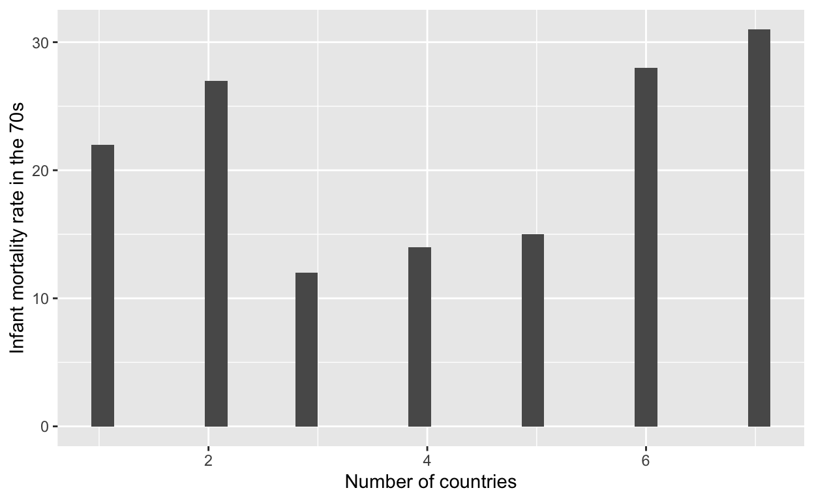
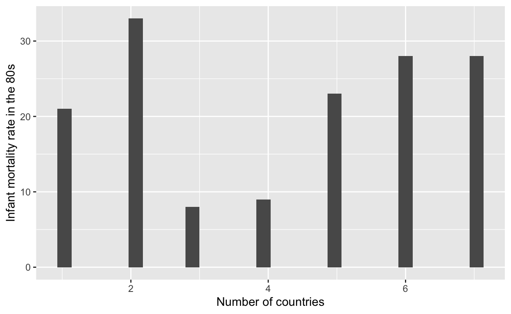
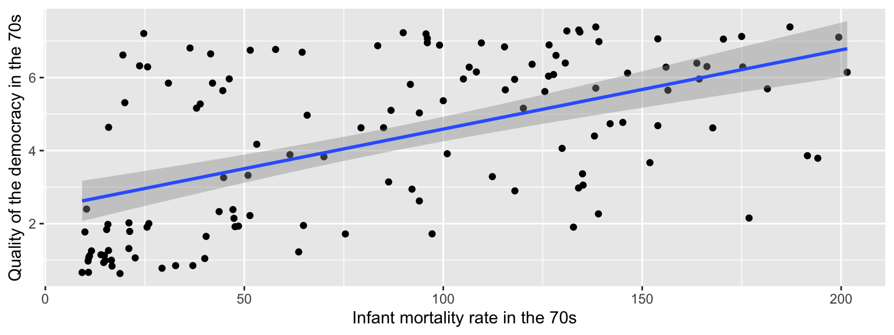
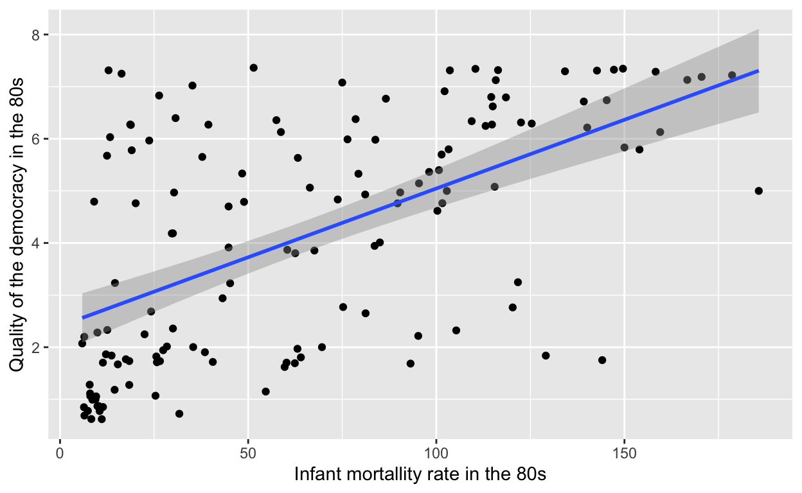

An observational analysis of the relationship between the infant mortality rate and democracy
##For the dependent variable, the measure of democracy, it is important that we establish what this means. Contrary to our assumption that a higher democracy score means a overall better democracy, The Gastil scale rates a country’s democracy based on a scale of 1-7, with 1 being the most free or best democracy and 7 being the least free or worst democracy. Therefore, a positive correlation between these two variables would indicate that the better the democracy, the lower the infant mortality rate would be (closest to 0 for the x andy-axiss).
knitr::opts_chunk$set(echo = TRUE)
library(gapminder)
library(tidyverse)violence <- read.csv("violence.csv")ggplot(violence, aes(democ70)) +
geom_histogram() +
labs(x="Number of countries", y="Infant mortality rate in the 70s")
ggplot(violence, aes(democ80)) +
geom_histogram() +
labs(x="Number of countries", y="Infant mortality rate in the 80s")
plot_ <- violence %>%
ggplot(aes(x=wdiinfmt70,y=democ70))+
geom_point(position = "jitter")+
geom_smooth(method="lm")+
xlab("Infant mortality rate in the 70s")+
ylab("Quality of the democracy in the 70s")
plot_
plot_2 <- violence %>%
ggplot(aes(x=wdiinfmt80,y=democ80))+
geom_point(position = "jitter")+
geom_smooth(method="lm")+
xlab("Infant mortallity rate in the 80s")+
ylab("Quality of the democracy in the 80s")
plot_2
lm1 <- lm(data = violence, formula = democ70 ~ wdiinfmt70 + tvPC70 + lrgdp70 + radiosPC70 + newspaperPC70 + riots70 + pop70)
summary(lm1)
Call:
lm(formula = democ70 ~ wdiinfmt70 + tvPC70 + lrgdp70 + radiosPC70 +
newspaperPC70 + riots70 + pop70, data = violence)
Residuals:
Min 1Q Median 3Q Max
-4.1219 -0.9741 0.3119 0.9252 2.8263
Coefficients:
Estimate Std. Error t value Pr(>|t|)
(Intercept) 1.036e+01 3.358e+00 3.086 0.00274 **
wdiinfmt70 3.749e-03 5.628e-03 0.666 0.50716
tvPC70 3.570e+00 4.518e+00 0.790 0.43171
lrgdp70 -7.283e-01 4.237e-01 -1.719 0.08933 .
radiosPC70 -2.530e+00 1.762e+00 -1.436 0.15463
newspaperPC70 -4.853e+00 3.596e+00 -1.350 0.18077
riots70 -2.565e-01 1.424e-01 -1.801 0.07528 .
pop70 -3.737e-09 2.962e-09 -1.262 0.21051
---
Signif. codes: 0 '***' 0.001 '**' 0.01 '*' 0.05 '.' 0.1 ' ' 1
Residual standard error: 1.556 on 84 degrees of freedom
(116 observations deleted due to missingness)
Multiple R-squared: 0.5534, Adjusted R-squared: 0.5162
F-statistic: 14.87 on 7 and 84 DF, p-value: 1.799e-12lm2 <- lm(data = violence, formula = democ80 ~ wdiinfmt80 + tvPC80 + lrgdp80 + radiosPC80 + newspaperPC80 + riots80 + pop80)
summary(lm2)
Call:
lm(formula = democ80 ~ wdiinfmt80 + tvPC80 + lrgdp80 + radiosPC80 +
newspaperPC80 + riots80 + pop80, data = violence)
Residuals:
Min 1Q Median 3Q Max
-4.2152 -0.7514 -0.1011 0.9007 3.2669
Coefficients:
Estimate Std. Error t value Pr(>|t|)
(Intercept) 3.595e+00 3.154e+00 1.140 0.2574
wdiinfmt80 2.309e-02 6.141e-03 3.760 0.0003 ***
tvPC80 -1.193e+00 2.898e+00 -0.412 0.6815
lrgdp80 -9.906e-02 3.792e-01 -0.261 0.7945
radiosPC80 -3.188e-01 1.266e+00 -0.252 0.8017
newspaperPC80 -1.154e+00 2.495e+00 -0.463 0.6448
riots80 1.155e-01 1.313e-01 0.879 0.3816
pop80 -5.925e-09 2.995e-09 -1.978 0.0509 .
---
Signif. codes: 0 '***' 0.001 '**' 0.01 '*' 0.05 '.' 0.1 ' ' 1
Residual standard error: 1.469 on 91 degrees of freedom
(109 observations deleted due to missingness)
Multiple R-squared: 0.5609, Adjusted R-squared: 0.5271
F-statistic: 16.6 on 7 and 91 DF, p-value: 6.209e-14##Surprisingly, we notice that while there are no statistically significant values in the 70s with a value of 0.5, the rate of infant mortality in the 80s is extremely significant with a p-value of 0.0003; a value far below the significance threshold of 0.05. Although it is difficult to explain these drastic differences between decades, one possible explanation could be additional confounding variables that were present in those respective decades and have a significant influence on my regression results.
## While we are able to explain a portion of the variance as evidenced by the Multiple R-squared and adjusted R-squared values being greater than 0.5, we find that this model lacks inferential power for all but one of the features of interest, as only one of them meets the 0.05 threshold—albeit in only a single decade—for statistical significance (infant mortality rate in the 80s) as measured by their p-value. We suspect that this is likely due to a combination of factors: first, missing values exist for several of the predictors, and the default handling of NA values is to drop those observations from the analysis, leaving us with fewer than 100 observations. Second, some of the predictors have low variance themselves (for instance, the riots indicator is interesting but with a median value of 0 is not as informative as hoped).
## My main coefficient of interest is infant mortality rate, as this is a well-measured variable that we suspect is often correlated with a host of sociopolitical outcomes. In the above model with the given additional explanatory values included, it does achieve statistical significance in the 80s, with a p-value less than my threshold of 0.05. However, this is not the case in the 70s where the p-value is above the threshold of 0.05. In both the 70s and 80s my coefficient of the infant mortality rate variable is positive, which suggests a positive correlation between this explanatory variable and the outcome variable (quality of democracy). This supports my original hypothesis that nations with stronger political institutions have lower infant mortality rate. It is important to note that we can only draw the previous conclusion for the 80s as in the 70s, the infant mortality rate was not significant. Additionally, we are faced with a slew of limitations that may or may not play a role in my results.
##However, even though the infant mortality rate variable was observed to be significant in the 80s, we would not draw a causal relationship between it and the outcome variable. Multivariate regression models are better suited to inferential studies of association rather than causation, and in this particular example, it is likely that the quality of a state’s democracy could create conditions for a lower infant mortality rate; however, this can only be confirmed through more in-depth research.
##Conclusion
##As in dictated by the results, we can only partially affirm my prior prediction that there is a negative correlation between the outcome variable, measure of democracy, and the explanatory variable, the infant mortality rate. These results displayed statistical significance between these variables in the 70s but not in the 80s. At the same time, we discovered something surprising. In the 80s, the infant mortality rate was extremely significant and was the only significant value in my multivariate regression. While these differing significances—in the 70s, infant mortality was not significant, but it was in the 80s—are interesting discoveries, they do not indicate causality. Additionally, a more complex and expansive research project may discover why we saw this difference in the 70s and 80s.
##My project was limited by several factors, the most significant being time and the inherent limitations found in the data set. A more expansive project would have included elements like robust checks to see how additional explanatory factors influence the regression. Additionally, the Political Violence data set did not include many social indicators that could serve as confounding variables. Without the inclusion of many factors, including but certainly not limited to divorce rate, level of education, and religious divisions., it becomes increasingly difficult to confidently affirm any significance found in my data set.